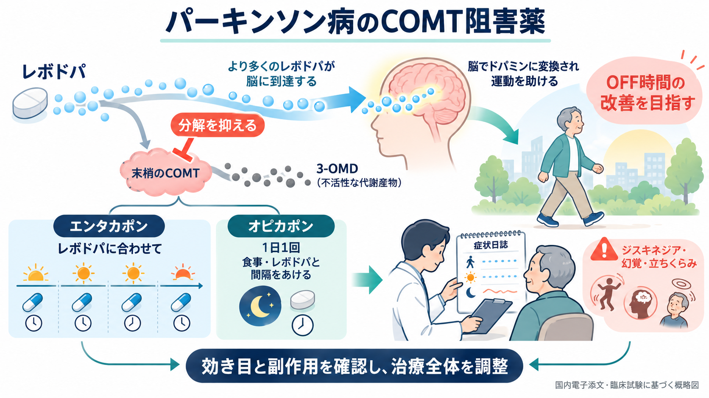
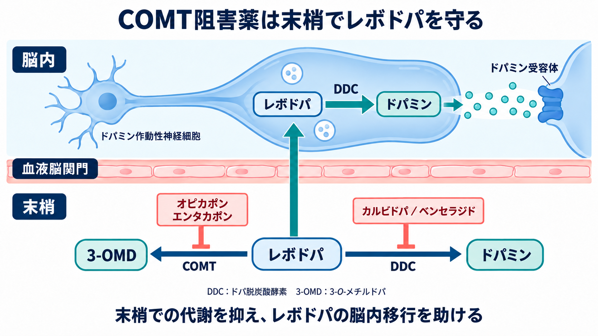
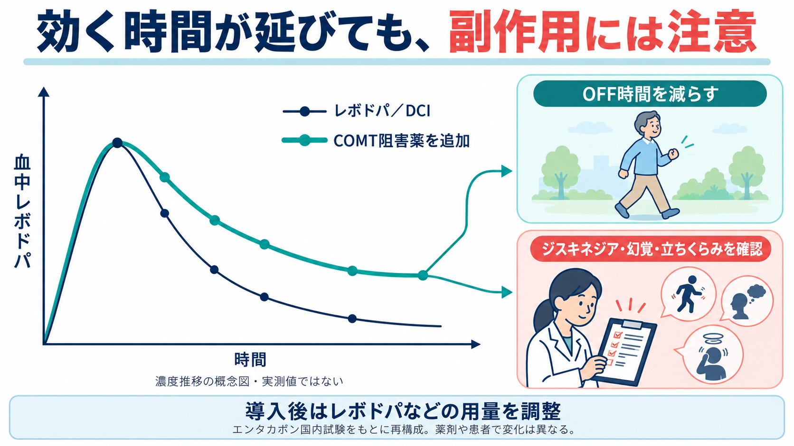

パーキンソン病のCOMT阻害薬
全体像、作用機序、レボドパの曝露と副作用を図で確認できます。画像を押すと拡大し、小さな画面では横に動かして読めます。
全体像
作用機序
曝露と副作用
COMT阻害薬の全体像

国内電子添文および臨床試験に基づく画像生成図。
作用機序

小野薬品工業 オンジェンティスIF 2026年10月第6版、本文p.68の模式図を参考に画像生成で再構成。エンタカポンの位置はコムタン電子添文18.1でも照合。チロシン合成・再取り込みは省略。
レボドパの曝露と副作用

コムタン電子添文2026年7月第4版p.3のレボドパ濃度図を参考に画像生成で再構成。実測値・治療域・効果量を示す図ではない。薬剤や患者で変化は異なる。
閉じる